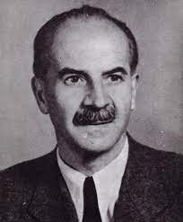

Pattantyús Ábrahám Géza
Magyar gépészmérnök, akadémikus professzor, nemzetközileg elismert tudós és a gépészet egyik kiemelkedő személyisége. A gépek szinte áttekinthetetlen sokaságának rendszerezője, a magyar gépészeti szakirodalom gazdagítója, sokoldalúan képzett, művelt közéleti személyiség.
Főbb művei
Emelőgépek (Bp., 1927)
Áramkörök (Bp., 1942)
A gépek üzemtana (Bp., 1944)
Felvonók (Bp., 1945)
Gépészeti lengéstan (Bp., 1952)

Élete
1885. december 11-én született Selmecbányán. Illaván járt elemi iskolába. Budapesten érettségizett Királyi Katholikus Egyetemi Főgimnáziumban (ma: Budapesti Egyetemi Katolikus Gimnázium) 1903-ban, majd 1907-ben gépészmérnöki oklevelet szerzett a Királyi József Műegyetemen. Ezután Zipernowsky Károly professzor mellé került tanársegédnek az elektrotechnikai tanszékre. 1910-ben tanulmányutat tett Németországba, Angliába, Belgiumba és az Egyesült Államokba. Hazatérése után folyamatosan oktatott a József Műegyetemen. 1912-től a II. Gépszerkezettani Tanszék adjunktusaként tevékenykedett, majd 1930-ban kinevezték műegyetemi nyilvános rendes tanárnak a III. Gépszerkezettani Tanszékre. A tanszéket később Vízgépek Tanszékének nevezték el.
A tanszéket Bánki Donát alapította 1899-ben, a tanszék neve Hidraulikai és Hidrogépek Tanszék volt. Első professzora Bánki Donát volt, akinek nevét határturbinájának elméleti kidolgozása tette ismertté. A kiváló konstruktőr feltaláló (porlasztó, motorok) Bánki 1922-ben hunyt el, és csak 1930-ban került professzori rangú oktató a Tanszék élére Pattantyús-Ábrahám Géza személyében, aki a műszaki felsőoktatásnak Magyarországon egyik legnevesebb mérnökpedagógusa.
Munkássága iránti tiszteletből róla nevezték el a Pattantyús gépész- és villamosmérnökök kézikönyve sorozatot, melynek szerkesztőbizottságát haláláig ő vezette.
Számos könyvvel gazdagította a magyar műszaki irodalmat, azonkívül kiterjesztette a tanszék tudományos kutatási profilját a pneumatikus anyagszállítás és a kétfázisú áramlások irányába. Pattantyús-Ábrahám Géza mérnökgenerációk nevelője, a „Pattantyús-iskola” megteremtője. Számos tankönyvet is írt, ezek közül kiemelkedik a Gépek üzemtana, ami tizennégy kiadást ért meg.
Tudományos munkáját a gyakorlattal való szoros kapcsolat jellemezte. A dugattyús szivattyúk légüstjének méretezésére kidolgozott eljárását az egész világon Pattantyús-módszerként ismerik. 1952-ben Kossuth-díjat kapott. Nagyon szerette a humort, ő volt az egyik fővédnöke az 1939-es Vicinális Dugóhúzó című vidám egyetemi kötetnek.
Pattantyús-Ábrahám Gézáról, a Műegyetem legendás professzoráról számos anekdota kering:
Az utcán posztoló rendőr arra lesz figyelmes, hogy késő este, zárás után a Műegyetem kerítésén sorra másznak át hallgatóforma fiatalemberek. A rendőr kérdésére mindegyik így védekezik:
– A Patyi bácsinál vizsgáztam.
Amikor úgy éjfél felé egy idős úr is igyekszik kifelé a kerítésen át, a rendőr dühösen rászól:
– Remélem, nem azt akarja mondani, hogy maga is a Patyi bácsinál vizsgázott.
– Nem kérem, én vagyok a Patyi bácsi.